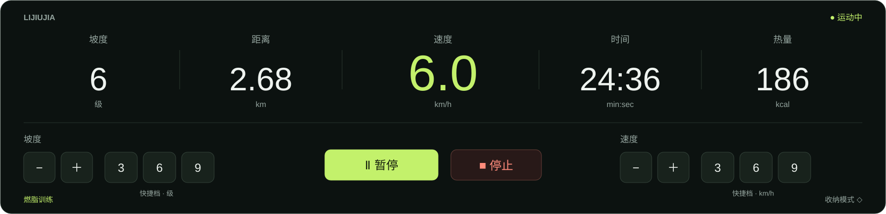
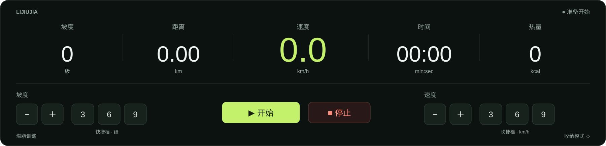

保留原稿 1800∶436 比例 · 视觉与状态提案 · 待评审

运动中：速度为视觉中心；坡度与速度分别有独立加减和 3／6／9 快捷档。
下方为状态切换预览。上方按键为版式示意；页面按钮只切换评审画面。
收纳页仅在设备已经安全进入收纳状态后显示。长按仅申请退出，仍需设备检测机身展开并满足运行条件；本稿不定义机械动作或真实控制逻辑。
待确认：有效显示尺寸、LED／LCD／触控方案、坡度单位与档位范围、最小字号、实体安全钥匙与停止逻辑。“燃脂训练”为模式入口提议；不代表已实现训练程序。
